29/10/2026. Telas 13, 66 e 69. Aplicativo de produção local em 3200 com Supabase local e contas descartáveis; Atlas offline com exemplos. Larguras: desktop 1440×1000 e celular 390×844. Dados e e-mails mostrados pertencem somente às fixtures locais, removidas após os testes.
Não há captura anterior preservada desta composição. Estas imagens mostram somente o estado atual; nenhuma captura foi reconstruída como antes. No desktop, Perfil abre painel com seis seções e modais; na página completa continuam oito blocos. Exclusão apenas aberta/cancelada, nunca confirmada. Aparência: aplicativo salva tema na conta temporária; Atlas apenas demonstra.
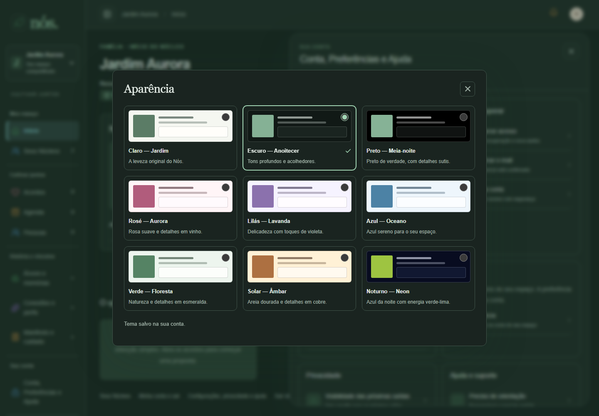
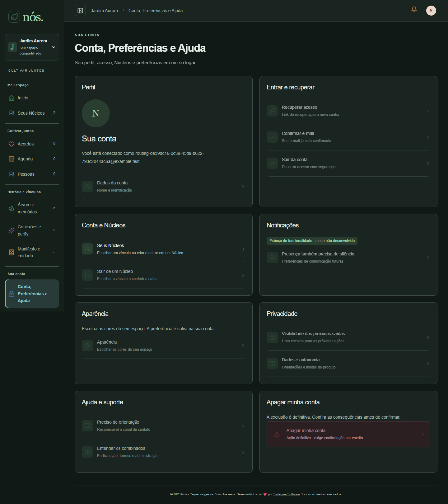
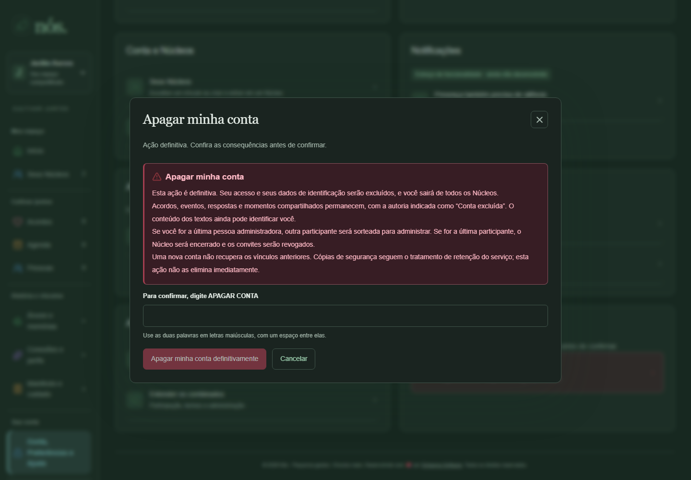
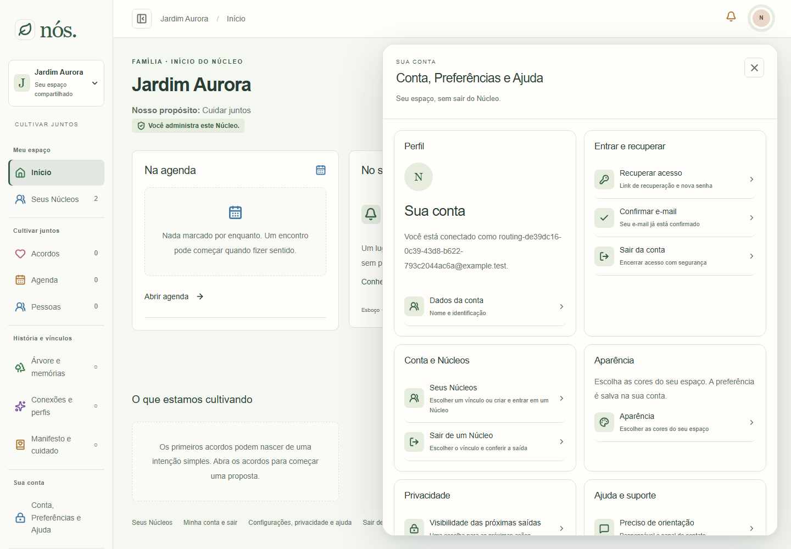
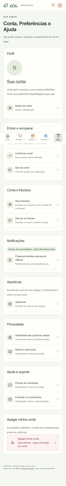
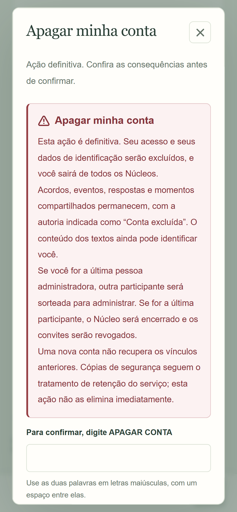
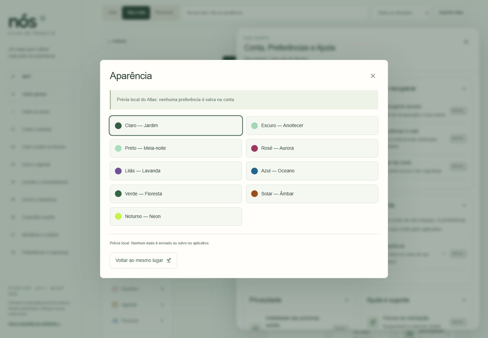
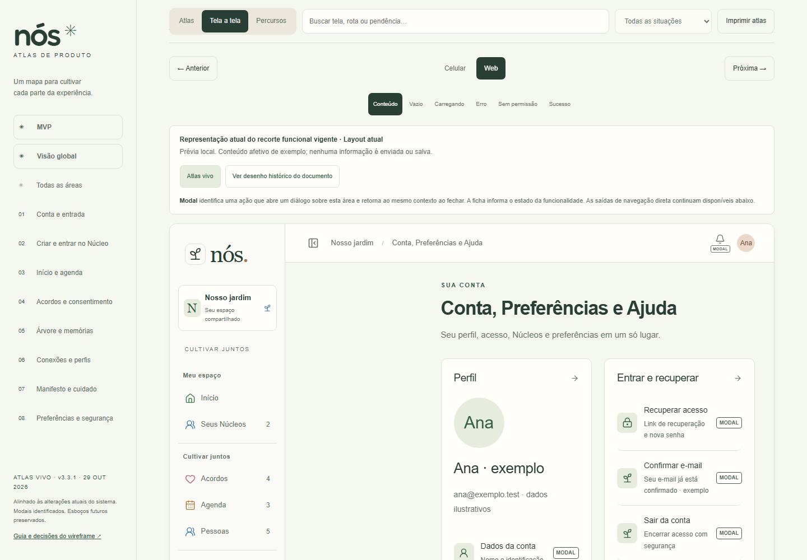
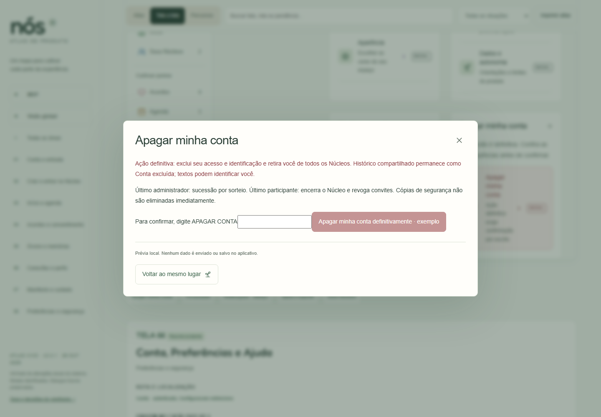
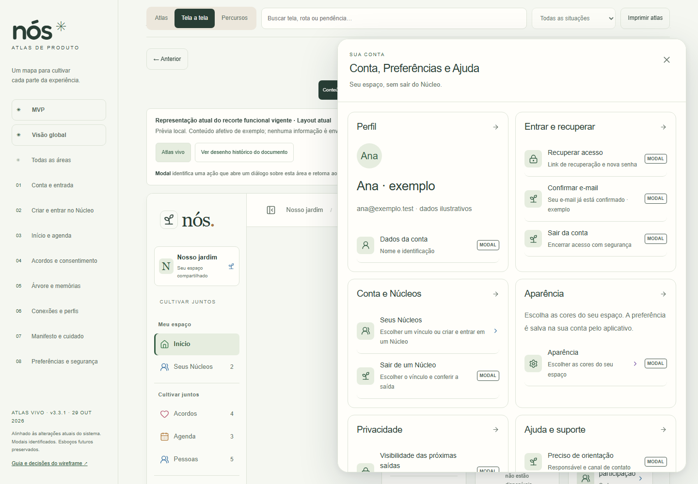
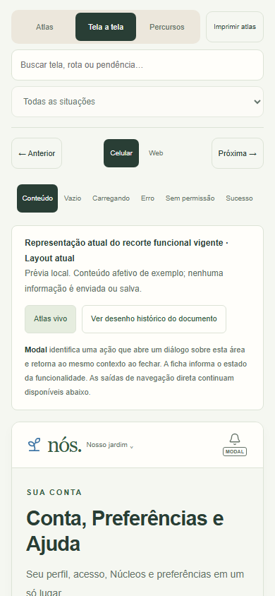
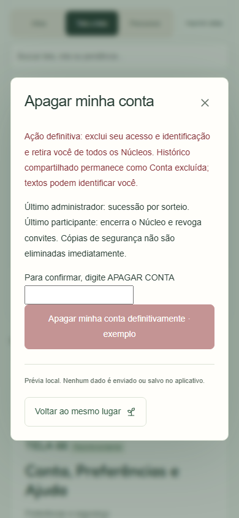